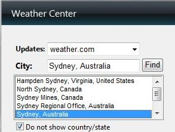
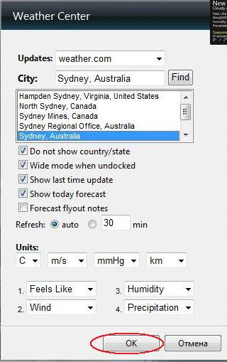

¿Como cambiar los dias en la previsión?
1.
Escribe el nombre de tu ciudad
2.
Presiona el boton “Buscar”

3.
Selecciona tu ciudad de la lista

4.
Presiona OK

Como cambiar los dias en la previsión
Mueve el mouse sobre gadget para mostrar el panel.
Presione las flechas para añadir o reducir el número de días de previsión.